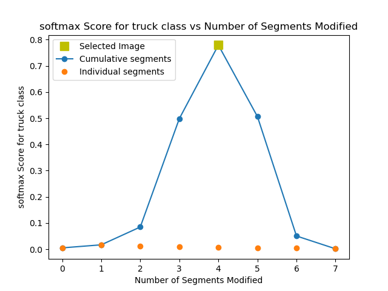
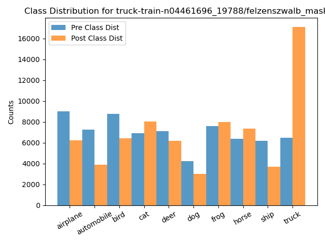
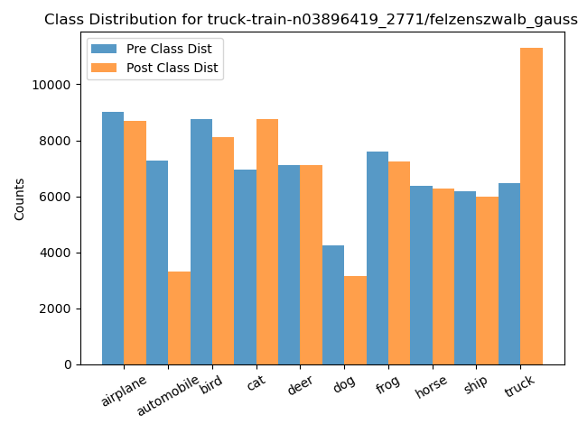
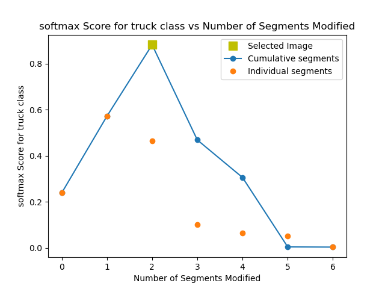
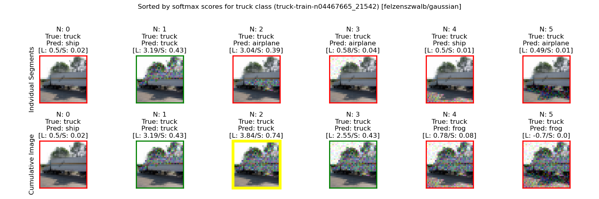
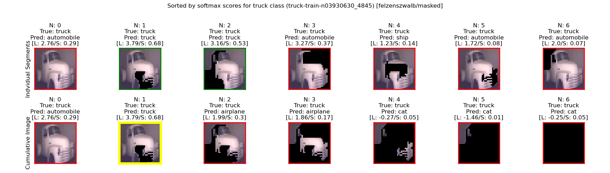

ID: truck-train-n04520170_12097/felzenszwalb_gaussian_softmax
Accuracy: 0.687 -> 0.62
Mean Recall: 0.687 -> 0.62
Mean Precision: 0.692 -> 0.611
Mean F1: 0.684 -> 0.587
Target Recall: 0.668 -> 0.932
Target Precision: 0.722 -> 0.412
Target F1: 0.694 -> 0.571
Orig Pred Recall: 0.769 -> 0.0
Orig Pred Precision: 0.74 -> 0.0
Orig Pred F1: 0.754 -> 0.0
ID: truck-train-n04465666_8242/felzenszwalb_masked_softmax
Accuracy: 0.687 -> 0.615
Mean Recall: 0.687 -> 0.615
Mean Precision: 0.692 -> 0.611
Mean F1: 0.684 -> 0.581
Target Recall: 0.668 -> 0.931
Target Precision: 0.722 -> 0.411
Target F1: 0.694 -> 0.57
Orig Pred Recall: 0.769 -> 0.0
Orig Pred Precision: 0.74 -> 0.0
Orig Pred F1: 0.754 -> 0.0
ID: truck-train-n03977966_32727/felzenszwalb_gaussian_softmax
Accuracy: 0.687 -> 0.622
Mean Recall: 0.687 -> 0.622
Mean Precision: 0.692 -> 0.611
Mean F1: 0.684 -> 0.589
Target Recall: 0.668 -> 0.929
Target Precision: 0.722 -> 0.418
Target F1: 0.694 -> 0.577
Orig Pred Recall: 0.769 -> 0.0
Orig Pred Precision: 0.74 -> 0.0
Orig Pred F1: 0.754 -> 0.0
ID: truck-train-n03690473_28509/felzenszwalb_gaussian_softmax
Accuracy: 0.687 -> 0.623
Mean Recall: 0.687 -> 0.623
Mean Precision: 0.692 -> 0.607
Mean F1: 0.684 -> 0.59
Target Recall: 0.668 -> 0.928
Target Precision: 0.722 -> 0.422
Target F1: 0.694 -> 0.58
Orig Pred Recall: 0.769 -> 0.0
Orig Pred Precision: 0.74 -> 0.0
Orig Pred F1: 0.754 -> 0.0
ID: truck-train-n03896419_3664/felzenszwalb_gaussian_softmax
Accuracy: 0.687 -> 0.623
Mean Recall: 0.687 -> 0.623
Mean Precision: 0.692 -> 0.604
Mean F1: 0.684 -> 0.59
Target Recall: 0.668 -> 0.927
Target Precision: 0.722 -> 0.413
Target F1: 0.694 -> 0.572
Orig Pred Recall: 0.769 -> 0.0
Orig Pred Precision: 0.74 -> 0.0
Orig Pred F1: 0.754 -> 0.0
ID: truck-train-n03173929_2284/felzenszwalb_gaussian_softmax
Accuracy: 0.687 -> 0.622
Mean Recall: 0.687 -> 0.622
Mean Precision: 0.692 -> 0.61
Mean F1: 0.684 -> 0.588
Target Recall: 0.668 -> 0.927
Target Precision: 0.722 -> 0.423
Target F1: 0.694 -> 0.581
Orig Pred Recall: 0.769 -> 0.0
Orig Pred Precision: 0.74 -> 0.0
Orig Pred F1: 0.754 -> 0.0
ID: truck-train-n04520170_1143/felzenszwalb_gaussian_softmax
Accuracy: 0.687 -> 0.624
Mean Recall: 0.687 -> 0.624
Mean Precision: 0.692 -> 0.604
Mean F1: 0.684 -> 0.591
Target Recall: 0.668 -> 0.926
Target Precision: 0.722 -> 0.418
Target F1: 0.694 -> 0.576
Orig Pred Recall: 0.769 -> 0.0
Orig Pred Precision: 0.74 -> 0.0
Orig Pred F1: 0.754 -> 0.0
ID: truck-train-n04520170_10429/felzenszwalb_gaussian_softmax
Accuracy: 0.687 -> 0.624
Mean Recall: 0.687 -> 0.624
Mean Precision: 0.692 -> 0.606
Mean F1: 0.684 -> 0.591
Target Recall: 0.668 -> 0.925
Target Precision: 0.722 -> 0.421
Target F1: 0.694 -> 0.578
Orig Pred Recall: 0.769 -> 0.0
Orig Pred Precision: 0.74 -> 0.0
Orig Pred F1: 0.754 -> 0.0

ID: truck-train-n04520170_2584/felzenszwalb_gaussian_softmax
Accuracy: 0.687 -> 0.624
Mean Recall: 0.687 -> 0.624
Mean Precision: 0.692 -> 0.609
Mean F1: 0.684 -> 0.591
Target Recall: 0.668 -> 0.924
Target Precision: 0.722 -> 0.424
Target F1: 0.694 -> 0.581
Orig Pred Recall: 0.769 -> 0.0
Orig Pred Precision: 0.74 -> 0.0
Orig Pred F1: 0.754 -> 0.0
ID: truck-train-n03896419_822/felzenszwalb_masked_softmax
Accuracy: 0.687 -> 0.625
Mean Recall: 0.687 -> 0.625
Mean Precision: 0.692 -> 0.605
Mean F1: 0.684 -> 0.592
Target Recall: 0.668 -> 0.924
Target Precision: 0.722 -> 0.424
Target F1: 0.694 -> 0.581
Orig Pred Recall: 0.769 -> 0.0
Orig Pred Precision: 0.74 -> 0.0
Orig Pred F1: 0.754 -> 0.0

ID: truck-train-n03930630_11996/felzenszwalb_gaussian_softmax
Accuracy: 0.687 -> 0.624
Mean Recall: 0.687 -> 0.624
Mean Precision: 0.692 -> 0.608
Mean F1: 0.684 -> 0.591
Target Recall: 0.668 -> 0.924
Target Precision: 0.722 -> 0.426
Target F1: 0.694 -> 0.583
Orig Pred Recall: 0.769 -> 0.0
Orig Pred Precision: 0.74 -> 0.0
Orig Pred F1: 0.754 -> 0.0
ID: truck-train-n04474035_39931/felzenszwalb_masked_softmax
Accuracy: 0.687 -> 0.626
Mean Recall: 0.687 -> 0.626
Mean Precision: 0.692 -> 0.605
Mean F1: 0.684 -> 0.593
Target Recall: 0.668 -> 0.922
Target Precision: 0.722 -> 0.426
Target F1: 0.694 -> 0.583
Orig Pred Recall: 0.769 -> 0.0
Orig Pred Precision: 0.74 -> 0.0
Orig Pred F1: 0.754 -> 0.0

ID: truck-train-n04465666_4945/felzenszwalb_gaussian_softmax
Accuracy: 0.687 -> 0.625
Mean Recall: 0.687 -> 0.625
Mean Precision: 0.692 -> 0.606
Mean F1: 0.684 -> 0.593
Target Recall: 0.668 -> 0.921
Target Precision: 0.722 -> 0.429
Target F1: 0.694 -> 0.586
Orig Pred Recall: 0.769 -> 0.0
Orig Pred Precision: 0.74 -> 0.0
Orig Pred F1: 0.754 -> 0.0
ID: truck-train-n04520170_4709/felzenszwalb_gaussian_softmax
Accuracy: 0.687 -> 0.635
Mean Recall: 0.687 -> 0.635
Mean Precision: 0.692 -> 0.701
Mean F1: 0.684 -> 0.612
Target Recall: 0.668 -> 0.92
Target Precision: 0.722 -> 0.435
Target F1: 0.694 -> 0.591
Orig Pred Recall: 0.769 -> 0.085
Orig Pred Precision: 0.74 -> 0.961
Orig Pred F1: 0.754 -> 0.155

ID: truck-train-n03977966_28049/felzenszwalb_masked_softmax
Accuracy: 0.687 -> 0.629
Mean Recall: 0.687 -> 0.629
Mean Precision: 0.692 -> 0.601
Mean F1: 0.684 -> 0.596
Target Recall: 0.668 -> 0.918
Target Precision: 0.722 -> 0.43
Target F1: 0.694 -> 0.585
Orig Pred Recall: 0.769 -> 0.0
Orig Pred Precision: 0.74 -> 0.0
Orig Pred F1: 0.754 -> 0.0
ID: truck-train-n03896419_1249/felzenszwalb_gaussian_softmax
Accuracy: 0.687 -> 0.627
Mean Recall: 0.687 -> 0.627
Mean Precision: 0.692 -> 0.603
Mean F1: 0.684 -> 0.594
Target Recall: 0.668 -> 0.918
Target Precision: 0.722 -> 0.43
Target F1: 0.694 -> 0.586
Orig Pred Recall: 0.769 -> 0.0
Orig Pred Precision: 0.74 -> 0.0
Orig Pred F1: 0.754 -> 0.0
ID: truck-train-n03930630_1045/felzenszwalb_gaussian_softmax
Accuracy: 0.687 -> 0.625
Mean Recall: 0.687 -> 0.625
Mean Precision: 0.692 -> 0.605
Mean F1: 0.684 -> 0.592
Target Recall: 0.668 -> 0.918
Target Precision: 0.722 -> 0.431
Target F1: 0.694 -> 0.586
Orig Pred Recall: 0.769 -> 0.0
Orig Pred Precision: 0.74 -> 0.0
Orig Pred F1: 0.754 -> 0.0
ID: truck-train-n03896419_822/felzenszwalb_gaussian_softmax
Accuracy: 0.687 -> 0.627
Mean Recall: 0.687 -> 0.627
Mean Precision: 0.692 -> 0.603
Mean F1: 0.684 -> 0.593
Target Recall: 0.668 -> 0.917
Target Precision: 0.722 -> 0.431
Target F1: 0.694 -> 0.587
Orig Pred Recall: 0.769 -> 0.0
Orig Pred Precision: 0.74 -> 0.0
Orig Pred F1: 0.754 -> 0.0
ID: truck-train-n03930630_15025/felzenszwalb_gaussian_softmax
Accuracy: 0.687 -> 0.629
Mean Recall: 0.687 -> 0.629
Mean Precision: 0.692 -> 0.601
Mean F1: 0.684 -> 0.595
Target Recall: 0.668 -> 0.917
Target Precision: 0.722 -> 0.43
Target F1: 0.694 -> 0.586
Orig Pred Recall: 0.769 -> 0.0
Orig Pred Precision: 0.74 -> 0.0
Orig Pred F1: 0.754 -> 0.0
ID: truck-train-n03930630_15025/felzenszwalb_masked_softmax
Accuracy: 0.687 -> 0.628
Mean Recall: 0.687 -> 0.628
Mean Precision: 0.692 -> 0.601
Mean F1: 0.684 -> 0.595
Target Recall: 0.668 -> 0.917
Target Precision: 0.722 -> 0.431
Target F1: 0.694 -> 0.586
Orig Pred Recall: 0.769 -> 0.0
Orig Pred Precision: 0.74 -> 0.0
Orig Pred F1: 0.754 -> 0.0
ID: truck-train-n04520170_1143/felzenszwalb_masked_softmax
Accuracy: 0.687 -> 0.628
Mean Recall: 0.687 -> 0.628
Mean Precision: 0.692 -> 0.6
Mean F1: 0.684 -> 0.594
Target Recall: 0.668 -> 0.916
Target Precision: 0.722 -> 0.432
Target F1: 0.694 -> 0.587
Orig Pred Recall: 0.769 -> 0.0
Orig Pred Precision: 0.74 -> 0.0
Orig Pred F1: 0.754 -> 0.0
ID: truck-train-n04465666_16531/felzenszwalb_gaussian_softmax
Accuracy: 0.687 -> 0.623
Mean Recall: 0.687 -> 0.623
Mean Precision: 0.692 -> 0.603
Mean F1: 0.684 -> 0.589
Target Recall: 0.668 -> 0.914
Target Precision: 0.722 -> 0.435
Target F1: 0.694 -> 0.589
Orig Pred Recall: 0.769 -> 0.0
Orig Pred Precision: 0.74 -> 0.0
Orig Pred F1: 0.754 -> 0.0
ID: truck-train-n03345487_11265/felzenszwalb_gaussian_softmax
Accuracy: 0.687 -> 0.633
Mean Recall: 0.687 -> 0.633
Mean Precision: 0.692 -> 0.701
Mean F1: 0.684 -> 0.605
Target Recall: 0.668 -> 0.914
Target Precision: 0.722 -> 0.447
Target F1: 0.694 -> 0.601
Orig Pred Recall: 0.769 -> 0.055
Orig Pred Precision: 0.74 -> 0.977
Orig Pred F1: 0.754 -> 0.104
ID: truck-train-n04520170_2584/felzenszwalb_masked_softmax
Accuracy: 0.687 -> 0.625
Mean Recall: 0.687 -> 0.625
Mean Precision: 0.692 -> 0.604
Mean F1: 0.684 -> 0.591
Target Recall: 0.668 -> 0.913
Target Precision: 0.722 -> 0.437
Target F1: 0.694 -> 0.591
Orig Pred Recall: 0.769 -> 0.0
Orig Pred Precision: 0.74 -> 0.0
Orig Pred F1: 0.754 -> 0.0
ID: truck-train-n04520170_10429/felzenszwalb_masked_softmax
Accuracy: 0.687 -> 0.626
Mean Recall: 0.687 -> 0.626
Mean Precision: 0.692 -> 0.669
Mean F1: 0.684 -> 0.593
Target Recall: 0.668 -> 0.913
Target Precision: 0.722 -> 0.429
Target F1: 0.694 -> 0.583
Orig Pred Recall: 0.769 -> 0.0
Orig Pred Precision: 0.74 -> 0.667
Orig Pred F1: 0.754 -> 0.001
ID: truck-train-n04474035_35064/felzenszwalb_masked_softmax
Accuracy: 0.687 -> 0.626
Mean Recall: 0.687 -> 0.626
Mean Precision: 0.692 -> 0.604
Mean F1: 0.684 -> 0.593
Target Recall: 0.668 -> 0.913
Target Precision: 0.722 -> 0.433
Target F1: 0.694 -> 0.588
Orig Pred Recall: 0.769 -> 0.0
Orig Pred Precision: 0.74 -> 0.0
Orig Pred F1: 0.754 -> 0.0

ID: truck-train-n03896419_4696/felzenszwalb_gaussian_softmax
Accuracy: 0.687 -> 0.629
Mean Recall: 0.687 -> 0.629
Mean Precision: 0.692 -> 0.6
Mean F1: 0.684 -> 0.595
Target Recall: 0.668 -> 0.913
Target Precision: 0.722 -> 0.437
Target F1: 0.694 -> 0.591
Orig Pred Recall: 0.769 -> 0.0
Orig Pred Precision: 0.74 -> 0.0
Orig Pred F1: 0.754 -> 0.0
ID: truck-train-n03896419_3664/felzenszwalb_masked_softmax
Accuracy: 0.687 -> 0.627
Mean Recall: 0.687 -> 0.627
Mean Precision: 0.692 -> 0.602
Mean F1: 0.684 -> 0.594
Target Recall: 0.668 -> 0.911
Target Precision: 0.722 -> 0.438
Target F1: 0.694 -> 0.591
Orig Pred Recall: 0.769 -> 0.0
Orig Pred Precision: 0.74 -> 0.0
Orig Pred F1: 0.754 -> 0.0
ID: truck-train-n03896419_4696/felzenszwalb_masked_softmax
Accuracy: 0.687 -> 0.628
Mean Recall: 0.687 -> 0.628
Mean Precision: 0.692 -> 0.6
Mean F1: 0.684 -> 0.594
Target Recall: 0.668 -> 0.909
Target Precision: 0.722 -> 0.44
Target F1: 0.694 -> 0.593
Orig Pred Recall: 0.769 -> 0.0
Orig Pred Precision: 0.74 -> 0.0
Orig Pred F1: 0.754 -> 0.0
ID: truck-train-n03977966_8390/felzenszwalb_gaussian_softmax
Accuracy: 0.687 -> 0.63
Mean Recall: 0.687 -> 0.63
Mean Precision: 0.692 -> 0.599
Mean F1: 0.684 -> 0.596
Target Recall: 0.668 -> 0.908
Target Precision: 0.722 -> 0.443
Target F1: 0.694 -> 0.595
Orig Pred Recall: 0.769 -> 0.0
Orig Pred Precision: 0.74 -> 0.0
Orig Pred F1: 0.754 -> 0.0

ID: truck-train-n03977966_8390/felzenszwalb_masked_softmax
Accuracy: 0.687 -> 0.629
Mean Recall: 0.687 -> 0.629
Mean Precision: 0.692 -> 0.598
Mean F1: 0.684 -> 0.595
Target Recall: 0.668 -> 0.905
Target Precision: 0.722 -> 0.444
Target F1: 0.694 -> 0.596
Orig Pred Recall: 0.769 -> 0.0
Orig Pred Precision: 0.74 -> 0.0
Orig Pred F1: 0.754 -> 0.0
ID: truck-train-n04461696_2979/felzenszwalb_masked_softmax
Accuracy: 0.687 -> 0.615
Mean Recall: 0.687 -> 0.615
Mean Precision: 0.692 -> 0.612
Mean F1: 0.684 -> 0.583
Target Recall: 0.668 -> 0.904
Target Precision: 0.722 -> 0.44
Target F1: 0.694 -> 0.592
Orig Pred Recall: 0.769 -> 0.0
Orig Pred Precision: 0.74 -> 0.0
Orig Pred F1: 0.754 -> 0.0
ID: truck-train-n04461696_19788/felzenszwalb_masked_softmax
Accuracy: 0.687 -> 0.64
Mean Recall: 0.687 -> 0.64
Mean Precision: 0.692 -> 0.714
Mean F1: 0.684 -> 0.644
Target Recall: 0.668 -> 0.904
Target Precision: 0.722 -> 0.37
Target F1: 0.694 -> 0.525
Orig Pred Recall: 0.769 -> 0.49
Orig Pred Precision: 0.74 -> 0.878
Orig Pred F1: 0.754 -> 0.629
ID: truck-train-n03256166_6898/felzenszwalb_masked_softmax
Accuracy: 0.687 -> 0.627
Mean Recall: 0.687 -> 0.627
Mean Precision: 0.692 -> 0.601
Mean F1: 0.684 -> 0.593
Target Recall: 0.668 -> 0.903
Target Precision: 0.722 -> 0.446
Target F1: 0.694 -> 0.597
Orig Pred Recall: 0.769 -> 0.0
Orig Pred Precision: 0.74 -> 0.0
Orig Pred F1: 0.754 -> 0.0
ID: truck-train-n03896419_1123/felzenszwalb_masked_softmax
Accuracy: 0.687 -> 0.63
Mean Recall: 0.687 -> 0.63
Mean Precision: 0.692 -> 0.696
Mean F1: 0.684 -> 0.596
Target Recall: 0.668 -> 0.895
Target Precision: 0.722 -> 0.453
Target F1: 0.694 -> 0.602
Orig Pred Recall: 0.769 -> 0.0
Orig Pred Precision: 0.74 -> 1.0
Orig Pred F1: 0.754 -> 0.0
ID: truck-train-n03690473_28509/felzenszwalb_masked_softmax
Accuracy: 0.687 -> 0.64
Mean Recall: 0.687 -> 0.64
Mean Precision: 0.692 -> 0.698
Mean F1: 0.684 -> 0.619
Target Recall: 0.668 -> 0.892
Target Precision: 0.722 -> 0.48
Target F1: 0.694 -> 0.624
Orig Pred Recall: 0.769 -> 0.125
Orig Pred Precision: 0.74 -> 0.955
Orig Pred F1: 0.754 -> 0.221
ID: truck-train-n03930630_1955/felzenszwalb_masked_softmax
Accuracy: 0.687 -> 0.629
Mean Recall: 0.687 -> 0.629
Mean Precision: 0.692 -> 0.696
Mean F1: 0.684 -> 0.597
Target Recall: 0.668 -> 0.89
Target Precision: 0.722 -> 0.46
Target F1: 0.694 -> 0.607
Orig Pred Recall: 0.769 -> 0.012
Orig Pred Precision: 0.74 -> 0.966
Orig Pred F1: 0.754 -> 0.024
ID: truck-train-n04465666_12291/felzenszwalb_masked_softmax
Accuracy: 0.687 -> 0.646
Mean Recall: 0.687 -> 0.646
Mean Precision: 0.692 -> 0.713
Mean F1: 0.684 -> 0.65
Target Recall: 0.668 -> 0.885
Target Precision: 0.722 -> 0.375
Target F1: 0.694 -> 0.527
Orig Pred Recall: 0.769 -> 0.52
Orig Pred Precision: 0.74 -> 0.868
Orig Pred F1: 0.754 -> 0.651
ID: truck-train-n04465666_7029/felzenszwalb_masked_softmax
Accuracy: 0.687 -> 0.624
Mean Recall: 0.687 -> 0.624
Mean Precision: 0.692 -> 0.726
Mean F1: 0.684 -> 0.635
Target Recall: 0.668 -> 0.883
Target Precision: 0.722 -> 0.312
Target F1: 0.694 -> 0.461
Orig Pred Recall: 0.743 -> 0.488
Orig Pred Precision: 0.594 -> 0.879
Orig Pred F1: 0.66 -> 0.628

ID: truck-train-n04465666_1367/felzenszwalb_masked_softmax
Accuracy: 0.687 -> 0.518
Mean Recall: 0.687 -> 0.518
Mean Precision: 0.692 -> 0.644
Mean F1: 0.684 -> 0.522
Target Recall: 0.668 -> 0.877
Target Precision: 0.722 -> 0.203
Target F1: 0.694 -> 0.329
Orig Pred Recall: 0.743 -> 0.0
Orig Pred Precision: 0.594 -> 0.0
Orig Pred F1: 0.66 -> 0.0
ID: truck-train-n03173929_10947/felzenszwalb_masked_softmax
Accuracy: 0.687 -> 0.637
Mean Recall: 0.687 -> 0.637
Mean Precision: 0.692 -> 0.691
Mean F1: 0.684 -> 0.612
Target Recall: 0.668 -> 0.874
Target Precision: 0.722 -> 0.485
Target F1: 0.694 -> 0.624
Orig Pred Recall: 0.769 -> 0.089
Orig Pred Precision: 0.74 -> 0.944
Orig Pred F1: 0.754 -> 0.163
ID: truck-train-n03896419_2024/felzenszwalb_gaussian_softmax
Accuracy: 0.687 -> 0.666
Mean Recall: 0.687 -> 0.666
Mean Precision: 0.692 -> 0.701
Mean F1: 0.684 -> 0.66
Target Recall: 0.668 -> 0.873
Target Precision: 0.722 -> 0.526
Target F1: 0.694 -> 0.656
Orig Pred Recall: 0.769 -> 0.423
Orig Pred Precision: 0.74 -> 0.901
Orig Pred F1: 0.754 -> 0.575
ID: truck-train-n03896419_2330/felzenszwalb_gaussian_softmax
Accuracy: 0.687 -> 0.664
Mean Recall: 0.687 -> 0.664
Mean Precision: 0.692 -> 0.706
Mean F1: 0.684 -> 0.662
Target Recall: 0.668 -> 0.873
Target Precision: 0.722 -> 0.459
Target F1: 0.694 -> 0.602
Orig Pred Recall: 0.769 -> 0.52
Orig Pred Precision: 0.74 -> 0.871
Orig Pred F1: 0.754 -> 0.651
ID: truck-train-n03896419_2771/felzenszwalb_gaussian_softmax
Accuracy: 0.687 -> 0.666
Mean Recall: 0.687 -> 0.666
Mean Precision: 0.692 -> 0.7
Mean F1: 0.684 -> 0.66
Target Recall: 0.668 -> 0.867
Target Precision: 0.722 -> 0.537
Target F1: 0.694 -> 0.663
Orig Pred Recall: 0.769 -> 0.427
Orig Pred Precision: 0.74 -> 0.899
Orig Pred F1: 0.754 -> 0.579
ID: truck-train-n03896419_1249/felzenszwalb_masked_softmax
Accuracy: 0.687 -> 0.671
Mean Recall: 0.687 -> 0.671
Mean Precision: 0.692 -> 0.7
Mean F1: 0.684 -> 0.665
Target Recall: 0.668 -> 0.853
Target Precision: 0.722 -> 0.554
Target F1: 0.694 -> 0.672
Orig Pred Recall: 0.769 -> 0.468
Orig Pred Precision: 0.74 -> 0.888
Orig Pred F1: 0.754 -> 0.613
ID: truck-train-n04465666_1367/felzenszwalb_gaussian_softmax
Accuracy: 0.687 -> 0.523
Mean Recall: 0.687 -> 0.523
Mean Precision: 0.692 -> 0.64
Mean F1: 0.684 -> 0.526
Target Recall: 0.668 -> 0.847
Target Precision: 0.722 -> 0.2
Target F1: 0.694 -> 0.324
Orig Pred Recall: 0.743 -> 0.0
Orig Pred Precision: 0.594 -> 0.0
Orig Pred F1: 0.66 -> 0.0
ID: truck-train-n03896419_48/felzenszwalb_masked_softmax
Accuracy: 0.687 -> 0.592
Mean Recall: 0.687 -> 0.592
Mean Precision: 0.692 -> 0.702
Mean F1: 0.684 -> 0.574
Target Recall: 0.668 -> 0.843
Target Precision: 0.722 -> 0.308
Target F1: 0.694 -> 0.452
Orig Pred Recall: 0.877 -> 0.001
Orig Pred Precision: 0.68 -> 1.0
Orig Pred F1: 0.766 -> 0.002
ID: truck-train-n03345487_17869/felzenszwalb_gaussian_softmax
Accuracy: 0.687 -> 0.674
Mean Recall: 0.687 -> 0.674
Mean Precision: 0.692 -> 0.701
Mean F1: 0.684 -> 0.67
Target Recall: 0.668 -> 0.842
Target Precision: 0.722 -> 0.527
Target F1: 0.694 -> 0.648
Orig Pred Recall: 0.877 -> 0.855
Orig Pred Precision: 0.68 -> 0.738
Orig Pred F1: 0.766 -> 0.792
ID: truck-train-n03977966_42029/felzenszwalb_gaussian_softmax
Accuracy: 0.687 -> 0.675
Mean Recall: 0.687 -> 0.675
Mean Precision: 0.692 -> 0.7
Mean F1: 0.684 -> 0.67
Target Recall: 0.668 -> 0.842
Target Precision: 0.722 -> 0.559
Target F1: 0.694 -> 0.672
Orig Pred Recall: 0.769 -> 0.53
Orig Pred Precision: 0.74 -> 0.87
Orig Pred F1: 0.754 -> 0.658

ID: truck-train-n04467665_3580/felzenszwalb_gaussian_softmax
Accuracy: 0.687 -> 0.673
Mean Recall: 0.687 -> 0.673
Mean Precision: 0.692 -> 0.699
Mean F1: 0.684 -> 0.668
Target Recall: 0.668 -> 0.841
Target Precision: 0.722 -> 0.567
Target F1: 0.694 -> 0.677
Orig Pred Recall: 0.769 -> 0.507
Orig Pred Precision: 0.74 -> 0.875
Orig Pred F1: 0.754 -> 0.642
ID: truck-train-n04465666_12291/felzenszwalb_gaussian_softmax
Accuracy: 0.687 -> 0.667
Mean Recall: 0.687 -> 0.667
Mean Precision: 0.692 -> 0.701
Mean F1: 0.684 -> 0.665
Target Recall: 0.668 -> 0.832
Target Precision: 0.722 -> 0.485
Target F1: 0.694 -> 0.613
Orig Pred Recall: 0.769 -> 0.61
Orig Pred Precision: 0.74 -> 0.839
Orig Pred F1: 0.754 -> 0.707

ID: truck-train-n04461696_2979/felzenszwalb_gaussian_softmax
Accuracy: 0.687 -> 0.678
Mean Recall: 0.687 -> 0.678
Mean Precision: 0.692 -> 0.702
Mean F1: 0.684 -> 0.674
Target Recall: 0.668 -> 0.824
Target Precision: 0.722 -> 0.593
Target F1: 0.694 -> 0.689
Orig Pred Recall: 0.769 -> 0.552
Orig Pred Precision: 0.74 -> 0.866
Orig Pred F1: 0.754 -> 0.675

ID: truck-train-n03345487_17869/felzenszwalb_masked_softmax
Accuracy: 0.687 -> 0.673
Mean Recall: 0.687 -> 0.673
Mean Precision: 0.692 -> 0.697
Mean F1: 0.684 -> 0.671
Target Recall: 0.668 -> 0.818
Target Precision: 0.722 -> 0.469
Target F1: 0.694 -> 0.596
Orig Pred Recall: 0.877 -> 0.831
Orig Pred Precision: 0.68 -> 0.785
Orig Pred F1: 0.766 -> 0.807
ID: truck-train-n03173929_2284/felzenszwalb_masked_softmax
Accuracy: 0.687 -> 0.676
Mean Recall: 0.687 -> 0.676
Mean Precision: 0.692 -> 0.7
Mean F1: 0.684 -> 0.672
Target Recall: 0.668 -> 0.818
Target Precision: 0.722 -> 0.605
Target F1: 0.694 -> 0.695
Orig Pred Recall: 0.769 -> 0.536
Orig Pred Precision: 0.74 -> 0.87
Orig Pred F1: 0.754 -> 0.663
ID: truck-train-n03930630_1045/felzenszwalb_masked_softmax
Accuracy: 0.687 -> 0.672
Mean Recall: 0.687 -> 0.672
Mean Precision: 0.692 -> 0.697
Mean F1: 0.684 -> 0.667
Target Recall: 0.668 -> 0.817
Target Precision: 0.722 -> 0.602
Target F1: 0.694 -> 0.693
Orig Pred Recall: 0.769 -> 0.491
Orig Pred Precision: 0.74 -> 0.88
Orig Pred F1: 0.754 -> 0.631

ID: truck-train-n03930630_4845/felzenszwalb_gaussian_softmax
Accuracy: 0.687 -> 0.681
Mean Recall: 0.687 -> 0.681
Mean Precision: 0.692 -> 0.7
Mean F1: 0.684 -> 0.678
Target Recall: 0.668 -> 0.816
Target Precision: 0.722 -> 0.571
Target F1: 0.694 -> 0.672
Orig Pred Recall: 0.769 -> 0.602
Orig Pred Precision: 0.74 -> 0.843
Orig Pred F1: 0.754 -> 0.702
ID: truck-train-n03977966_32727/felzenszwalb_masked_softmax
Accuracy: 0.687 -> 0.679
Mean Recall: 0.687 -> 0.679
Mean Precision: 0.692 -> 0.698
Mean F1: 0.684 -> 0.675
Target Recall: 0.668 -> 0.806
Target Precision: 0.722 -> 0.598
Target F1: 0.694 -> 0.686
Orig Pred Recall: 0.769 -> 0.598
Orig Pred Precision: 0.74 -> 0.843
Orig Pred F1: 0.754 -> 0.7
ID: truck-train-n04474035_35064/felzenszwalb_gaussian_softmax
Accuracy: 0.687 -> 0.68
Mean Recall: 0.687 -> 0.68
Mean Precision: 0.692 -> 0.699
Mean F1: 0.684 -> 0.676
Target Recall: 0.668 -> 0.805
Target Precision: 0.722 -> 0.601
Target F1: 0.694 -> 0.688
Orig Pred Recall: 0.769 -> 0.593
Orig Pred Precision: 0.74 -> 0.847
Orig Pred F1: 0.754 -> 0.698

ID: truck-train-n03930630_11946/felzenszwalb_gaussian_softmax
Accuracy: 0.687 -> 0.679
Mean Recall: 0.687 -> 0.679
Mean Precision: 0.692 -> 0.698
Mean F1: 0.684 -> 0.676
Target Recall: 0.668 -> 0.803
Target Precision: 0.722 -> 0.599
Target F1: 0.694 -> 0.686
Orig Pred Recall: 0.769 -> 0.608
Orig Pred Precision: 0.74 -> 0.84
Orig Pred F1: 0.754 -> 0.705

ID: truck-train-n03632852_1934/felzenszwalb_gaussian_softmax
Accuracy: 0.687 -> 0.659
Mean Recall: 0.687 -> 0.659
Mean Precision: 0.692 -> 0.695
Mean F1: 0.684 -> 0.652
Target Recall: 0.668 -> 0.802
Target Precision: 0.722 -> 0.483
Target F1: 0.694 -> 0.603
Orig Pred Recall: 0.688 -> 0.422
Orig Pred Precision: 0.78 -> 0.915
Orig Pred F1: 0.731 -> 0.577
ID: truck-train-n04461696_12604/felzenszwalb_masked_softmax
Accuracy: 0.687 -> 0.681
Mean Recall: 0.687 -> 0.681
Mean Precision: 0.692 -> 0.697
Mean F1: 0.684 -> 0.678
Target Recall: 0.668 -> 0.801
Target Precision: 0.722 -> 0.596
Target F1: 0.694 -> 0.683
Orig Pred Recall: 0.769 -> 0.618
Orig Pred Precision: 0.74 -> 0.834
Orig Pred F1: 0.754 -> 0.71
ID: truck-train-n04467665_5207/felzenszwalb_masked_softmax
Accuracy: 0.687 -> 0.684
Mean Recall: 0.687 -> 0.684
Mean Precision: 0.692 -> 0.699
Mean F1: 0.684 -> 0.682
Target Recall: 0.668 -> 0.799
Target Precision: 0.722 -> 0.564
Target F1: 0.694 -> 0.661
Orig Pred Recall: 0.877 -> 0.803
Orig Pred Precision: 0.68 -> 0.82
Orig Pred F1: 0.766 -> 0.811

ID: truck-train-n03930630_2881/felzenszwalb_gaussian_softmax
Accuracy: 0.687 -> 0.677
Mean Recall: 0.687 -> 0.677
Mean Precision: 0.692 -> 0.699
Mean F1: 0.684 -> 0.672
Target Recall: 0.668 -> 0.798
Target Precision: 0.722 -> 0.608
Target F1: 0.694 -> 0.69
Orig Pred Recall: 0.769 -> 0.598
Orig Pred Precision: 0.74 -> 0.843
Orig Pred F1: 0.754 -> 0.7
ID: truck-train-n04467665_5207/felzenszwalb_gaussian_softmax
Accuracy: 0.687 -> 0.589
Mean Recall: 0.687 -> 0.589
Mean Precision: 0.692 -> 0.596
Mean F1: 0.684 -> 0.573
Target Recall: 0.668 -> 0.797
Target Precision: 0.722 -> 0.289
Target F1: 0.694 -> 0.424
Orig Pred Recall: 0.877 -> 0.0
Orig Pred Precision: 0.68 -> 0.0
Orig Pred F1: 0.766 -> 0.0
ID: truck-train-n04467665_1501/felzenszwalb_gaussian_softmax
Accuracy: 0.687 -> 0.606
Mean Recall: 0.687 -> 0.606
Mean Precision: 0.692 -> 0.595
Mean F1: 0.684 -> 0.575
Target Recall: 0.668 -> 0.796
Target Precision: 0.722 -> 0.354
Target F1: 0.694 -> 0.49
Orig Pred Recall: 0.688 -> 0.0
Orig Pred Precision: 0.78 -> 0.0
Orig Pred F1: 0.731 -> 0.0
ID: truck-train-n04467665_21542/felzenszwalb_gaussian_softmax
Accuracy: 0.687 -> 0.53
Mean Recall: 0.687 -> 0.53
Mean Precision: 0.692 -> 0.6
Mean F1: 0.684 -> 0.491
Target Recall: 0.668 -> 0.792
Target Precision: 0.722 -> 0.244
Target F1: 0.694 -> 0.373
Orig Pred Recall: 0.688 -> 0.0
Orig Pred Precision: 0.78 -> 0.0
Orig Pred F1: 0.731 -> 0.0
ID: truck-train-n03896419_1878/felzenszwalb_gaussian_softmax
Accuracy: 0.687 -> 0.681
Mean Recall: 0.687 -> 0.681
Mean Precision: 0.692 -> 0.696
Mean F1: 0.684 -> 0.677
Target Recall: 0.668 -> 0.791
Target Precision: 0.722 -> 0.615
Target F1: 0.694 -> 0.692
Orig Pred Recall: 0.769 -> 0.616
Orig Pred Precision: 0.74 -> 0.835
Orig Pred F1: 0.754 -> 0.709
ID: truck-train-n03345487_7514/felzenszwalb_gaussian_softmax
Accuracy: 0.687 -> 0.681
Mean Recall: 0.687 -> 0.681
Mean Precision: 0.692 -> 0.696
Mean F1: 0.684 -> 0.676
Target Recall: 0.668 -> 0.785
Target Precision: 0.722 -> 0.603
Target F1: 0.694 -> 0.682
Orig Pred Recall: 0.769 -> 0.653
Orig Pred Precision: 0.74 -> 0.819
Orig Pred F1: 0.754 -> 0.726

ID: truck-train-n04520170_11845/felzenszwalb_gaussian_softmax
Accuracy: 0.687 -> 0.682
Mean Recall: 0.687 -> 0.682
Mean Precision: 0.692 -> 0.696
Mean F1: 0.684 -> 0.678
Target Recall: 0.668 -> 0.782
Target Precision: 0.722 -> 0.625
Target F1: 0.694 -> 0.695
Orig Pred Recall: 0.769 -> 0.634
Orig Pred Precision: 0.74 -> 0.83
Orig Pred F1: 0.754 -> 0.718
ID: truck-train-n04520170_2095/felzenszwalb_masked_softmax
Accuracy: 0.687 -> 0.681
Mean Recall: 0.687 -> 0.681
Mean Precision: 0.692 -> 0.698
Mean F1: 0.684 -> 0.677
Target Recall: 0.668 -> 0.778
Target Precision: 0.722 -> 0.64
Target F1: 0.694 -> 0.702
Orig Pred Recall: 0.769 -> 0.628
Orig Pred Precision: 0.74 -> 0.833
Orig Pred F1: 0.754 -> 0.716
ID: truck-train-n03632852_1934/felzenszwalb_masked_softmax
Accuracy: 0.687 -> 0.619
Mean Recall: 0.687 -> 0.619
Mean Precision: 0.692 -> 0.679
Mean F1: 0.684 -> 0.587
Target Recall: 0.668 -> 0.776
Target Precision: 0.722 -> 0.385
Target F1: 0.694 -> 0.515
Orig Pred Recall: 0.688 -> 0.003
Orig Pred Precision: 0.78 -> 0.913
Orig Pred F1: 0.731 -> 0.006
ID: truck-train-n04465666_4945/felzenszwalb_masked_softmax
Accuracy: 0.687 -> 0.683
Mean Recall: 0.687 -> 0.683
Mean Precision: 0.692 -> 0.697
Mean F1: 0.684 -> 0.679
Target Recall: 0.668 -> 0.776
Target Precision: 0.722 -> 0.63
Target F1: 0.694 -> 0.695
Orig Pred Recall: 0.769 -> 0.654
Orig Pred Precision: 0.74 -> 0.819
Orig Pred F1: 0.754 -> 0.727
ID: truck-train-n03896419_2771/felzenszwalb_masked_softmax
Accuracy: 0.687 -> 0.682
Mean Recall: 0.687 -> 0.682
Mean Precision: 0.692 -> 0.697
Mean F1: 0.684 -> 0.679
Target Recall: 0.668 -> 0.775
Target Precision: 0.722 -> 0.633
Target F1: 0.694 -> 0.697
Orig Pred Recall: 0.769 -> 0.65
Orig Pred Precision: 0.74 -> 0.821
Orig Pred F1: 0.754 -> 0.725
ID: truck-train-n03930630_1457/felzenszwalb_gaussian_softmax
Accuracy: 0.687 -> 0.681
Mean Recall: 0.687 -> 0.681
Mean Precision: 0.692 -> 0.699
Mean F1: 0.684 -> 0.677
Target Recall: 0.668 -> 0.774
Target Precision: 0.722 -> 0.645
Target F1: 0.694 -> 0.703
Orig Pred Recall: 0.769 -> 0.636
Orig Pred Precision: 0.74 -> 0.832
Orig Pred F1: 0.754 -> 0.721
ID: truck-train-n03930630_502/felzenszwalb_gaussian_softmax
Accuracy: 0.687 -> 0.684
Mean Recall: 0.687 -> 0.684
Mean Precision: 0.692 -> 0.698
Mean F1: 0.684 -> 0.68
Target Recall: 0.668 -> 0.773
Target Precision: 0.722 -> 0.632
Target F1: 0.694 -> 0.695
Orig Pred Recall: 0.769 -> 0.662
Orig Pred Precision: 0.74 -> 0.815
Orig Pred F1: 0.754 -> 0.731
ID: truck-train-n03930630_5319/felzenszwalb_gaussian_softmax
Accuracy: 0.687 -> 0.683
Mean Recall: 0.687 -> 0.683
Mean Precision: 0.692 -> 0.697
Mean F1: 0.684 -> 0.679
Target Recall: 0.668 -> 0.772
Target Precision: 0.722 -> 0.628
Target F1: 0.694 -> 0.693
Orig Pred Recall: 0.769 -> 0.673
Orig Pred Precision: 0.74 -> 0.81
Orig Pred F1: 0.754 -> 0.735
ID: truck-train-n03764822_1830/felzenszwalb_masked_softmax
Accuracy: 0.687 -> 0.678
Mean Recall: 0.687 -> 0.678
Mean Precision: 0.692 -> 0.696
Mean F1: 0.684 -> 0.673
Target Recall: 0.668 -> 0.771
Target Precision: 0.722 -> 0.616
Target F1: 0.694 -> 0.685
Orig Pred Recall: 0.769 -> 0.682
Orig Pred Precision: 0.74 -> 0.805
Orig Pred F1: 0.754 -> 0.738

ID: truck-train-n03896419_2024/felzenszwalb_masked_softmax
Accuracy: 0.687 -> 0.684
Mean Recall: 0.687 -> 0.684
Mean Precision: 0.692 -> 0.697
Mean F1: 0.684 -> 0.68
Target Recall: 0.668 -> 0.771
Target Precision: 0.722 -> 0.628
Target F1: 0.694 -> 0.692
Orig Pred Recall: 0.769 -> 0.67
Orig Pred Precision: 0.74 -> 0.812
Orig Pred F1: 0.754 -> 0.734
ID: truck-train-n03896419_1681/felzenszwalb_gaussian_softmax
Accuracy: 0.687 -> 0.683
Mean Recall: 0.687 -> 0.683
Mean Precision: 0.692 -> 0.697
Mean F1: 0.684 -> 0.679
Target Recall: 0.668 -> 0.771
Target Precision: 0.722 -> 0.646
Target F1: 0.694 -> 0.703
Orig Pred Recall: 0.769 -> 0.643
Orig Pred Precision: 0.74 -> 0.826
Orig Pred F1: 0.754 -> 0.723

ID: truck-train-n04467665_1501/felzenszwalb_masked_softmax
Accuracy: 0.687 -> 0.614
Mean Recall: 0.687 -> 0.614
Mean Precision: 0.692 -> 0.588
Mean F1: 0.684 -> 0.58
Target Recall: 0.668 -> 0.77
Target Precision: 0.722 -> 0.379
Target F1: 0.694 -> 0.508
Orig Pred Recall: 0.688 -> 0.0
Orig Pred Precision: 0.78 -> 0.0
Orig Pred F1: 0.731 -> 0.0
ID: truck-train-n03632852_4072/felzenszwalb_gaussian_softmax
Accuracy: 0.687 -> 0.682
Mean Recall: 0.687 -> 0.682
Mean Precision: 0.692 -> 0.693
Mean F1: 0.684 -> 0.679
Target Recall: 0.668 -> 0.77
Target Precision: 0.722 -> 0.543
Target F1: 0.694 -> 0.637
Orig Pred Recall: 0.877 -> 0.805
Orig Pred Precision: 0.68 -> 0.818
Orig Pred F1: 0.766 -> 0.812
ID: truck-train-n03256166_6898/felzenszwalb_gaussian_softmax
Accuracy: 0.687 -> 0.684
Mean Recall: 0.687 -> 0.684
Mean Precision: 0.692 -> 0.697
Mean F1: 0.684 -> 0.68
Target Recall: 0.668 -> 0.77
Target Precision: 0.722 -> 0.637
Target F1: 0.694 -> 0.697
Orig Pred Recall: 0.769 -> 0.664
Orig Pred Precision: 0.74 -> 0.814
Orig Pred F1: 0.754 -> 0.732
ID: truck-train-n03173929_10947/felzenszwalb_gaussian_softmax
Accuracy: 0.687 -> 0.683
Mean Recall: 0.687 -> 0.683
Mean Precision: 0.692 -> 0.696
Mean F1: 0.684 -> 0.679
Target Recall: 0.668 -> 0.77
Target Precision: 0.722 -> 0.638
Target F1: 0.694 -> 0.698
Orig Pred Recall: 0.769 -> 0.652
Orig Pred Precision: 0.74 -> 0.82
Orig Pred F1: 0.754 -> 0.726
ID: truck-train-n04467665_53877/felzenszwalb_gaussian_softmax
Accuracy: 0.687 -> 0.617
Mean Recall: 0.687 -> 0.617
Mean Precision: 0.692 -> 0.587
Mean F1: 0.684 -> 0.584
Target Recall: 0.668 -> 0.768
Target Precision: 0.722 -> 0.381
Target F1: 0.694 -> 0.509
Orig Pred Recall: 0.688 -> 0.0
Orig Pred Precision: 0.78 -> 0.0
Orig Pred F1: 0.731 -> 0.0

ID: truck-train-n03930630_5319/felzenszwalb_masked_softmax
Accuracy: 0.687 -> 0.684
Mean Recall: 0.687 -> 0.684
Mean Precision: 0.692 -> 0.696
Mean F1: 0.684 -> 0.68
Target Recall: 0.668 -> 0.765
Target Precision: 0.722 -> 0.632
Target F1: 0.694 -> 0.692
Orig Pred Recall: 0.769 -> 0.684
Orig Pred Precision: 0.74 -> 0.804
Orig Pred F1: 0.754 -> 0.739

ID: truck-train-n03896419_3657/felzenszwalb_masked_softmax
Accuracy: 0.687 -> 0.684
Mean Recall: 0.687 -> 0.684
Mean Precision: 0.692 -> 0.696
Mean F1: 0.684 -> 0.681
Target Recall: 0.668 -> 0.764
Target Precision: 0.722 -> 0.644
Target F1: 0.694 -> 0.699
Orig Pred Recall: 0.769 -> 0.665
Orig Pred Precision: 0.74 -> 0.813
Orig Pred F1: 0.754 -> 0.732
ID: truck-train-n04461696_6999/felzenszwalb_masked_softmax
Accuracy: 0.687 -> 0.683
Mean Recall: 0.687 -> 0.683
Mean Precision: 0.692 -> 0.698
Mean F1: 0.684 -> 0.681
Target Recall: 0.668 -> 0.761
Target Precision: 0.722 -> 0.583
Target F1: 0.694 -> 0.66
Orig Pred Recall: 0.877 -> 0.843
Orig Pred Precision: 0.68 -> 0.767
Orig Pred F1: 0.766 -> 0.803

ID: truck-train-n04461696_6999/felzenszwalb_gaussian_softmax
Accuracy: 0.687 -> 0.677
Mean Recall: 0.687 -> 0.677
Mean Precision: 0.692 -> 0.689
Mean F1: 0.684 -> 0.673
Target Recall: 0.668 -> 0.76
Target Precision: 0.722 -> 0.499
Target F1: 0.694 -> 0.602
Orig Pred Recall: 0.877 -> 0.829
Orig Pred Precision: 0.68 -> 0.788
Orig Pred F1: 0.766 -> 0.808
ID: truck-train-n03632852_10906/felzenszwalb_gaussian_softmax
Accuracy: 0.687 -> 0.621
Mean Recall: 0.687 -> 0.621
Mean Precision: 0.692 -> 0.587
Mean F1: 0.684 -> 0.588
Target Recall: 0.668 -> 0.759
Target Precision: 0.722 -> 0.398
Target F1: 0.694 -> 0.522
Orig Pred Recall: 0.688 -> 0.0
Orig Pred Precision: 0.78 -> 0.0
Orig Pred F1: 0.731 -> 0.0
ID: truck-train-n03930630_11946/felzenszwalb_masked_softmax
Accuracy: 0.687 -> 0.685
Mean Recall: 0.687 -> 0.685
Mean Precision: 0.692 -> 0.697
Mean F1: 0.684 -> 0.681
Target Recall: 0.668 -> 0.758
Target Precision: 0.722 -> 0.648
Target F1: 0.694 -> 0.699
Orig Pred Recall: 0.769 -> 0.682
Orig Pred Precision: 0.74 -> 0.807
Orig Pred F1: 0.754 -> 0.739
ID: truck-train-n02871314_4055/felzenszwalb_masked_softmax
Accuracy: 0.687 -> 0.668
Mean Recall: 0.687 -> 0.668
Mean Precision: 0.692 -> 0.696
Mean F1: 0.684 -> 0.666
Target Recall: 0.668 -> 0.757
Target Precision: 0.722 -> 0.503
Target F1: 0.694 -> 0.604
Orig Pred Recall: 0.549 -> 0.649
Orig Pred Precision: 0.553 -> 0.473
Orig Pred F1: 0.551 -> 0.547
ID: truck-train-n03977966_42029/felzenszwalb_masked_softmax
Accuracy: 0.687 -> 0.612
Mean Recall: 0.687 -> 0.612
Mean Precision: 0.692 -> 0.598
Mean F1: 0.684 -> 0.582
Target Recall: 0.668 -> 0.755
Target Precision: 0.722 -> 0.679
Target F1: 0.694 -> 0.715
Orig Pred Recall: 0.769 -> 0.0
Orig Pred Precision: 0.74 -> 0.0
Orig Pred F1: 0.754 -> 0.0
ID: truck-train-n03896419_742/felzenszwalb_masked_softmax
Accuracy: 0.687 -> 0.678
Mean Recall: 0.687 -> 0.678
Mean Precision: 0.692 -> 0.692
Mean F1: 0.684 -> 0.671
Target Recall: 0.668 -> 0.754
Target Precision: 0.722 -> 0.61
Target F1: 0.694 -> 0.674
Orig Pred Recall: 0.769 -> 0.713
Orig Pred Precision: 0.74 -> 0.777
Orig Pred F1: 0.754 -> 0.743

ID: truck-train-n03764822_1830/felzenszwalb_gaussian_softmax
Accuracy: 0.687 -> 0.686
Mean Recall: 0.687 -> 0.686
Mean Precision: 0.692 -> 0.696
Mean F1: 0.684 -> 0.682
Target Recall: 0.668 -> 0.752
Target Precision: 0.722 -> 0.645
Target F1: 0.694 -> 0.694
Orig Pred Recall: 0.769 -> 0.696
Orig Pred Precision: 0.74 -> 0.795
Orig Pred F1: 0.754 -> 0.742
ID: truck-train-n03896419_1123/felzenszwalb_gaussian_softmax
Accuracy: 0.687 -> 0.685
Mean Recall: 0.687 -> 0.685
Mean Precision: 0.692 -> 0.696
Mean F1: 0.684 -> 0.681
Target Recall: 0.668 -> 0.749
Target Precision: 0.722 -> 0.661
Target F1: 0.694 -> 0.702
Orig Pred Recall: 0.769 -> 0.684
Orig Pred Precision: 0.74 -> 0.804
Orig Pred F1: 0.754 -> 0.739

ID: truck-train-n03764822_2167/felzenszwalb_gaussian_softmax
Accuracy: 0.687 -> 0.686
Mean Recall: 0.687 -> 0.686
Mean Precision: 0.692 -> 0.691
Mean F1: 0.684 -> 0.683
Target Recall: 0.668 -> 0.748
Target Precision: 0.722 -> 0.577
Target F1: 0.694 -> 0.652
Orig Pred Recall: 0.877 -> 0.811
Orig Pred Precision: 0.68 -> 0.812
Orig Pred F1: 0.766 -> 0.811

ID: truck-train-n03896419_48/felzenszwalb_gaussian_softmax
Accuracy: 0.687 -> 0.687
Mean Recall: 0.687 -> 0.687
Mean Precision: 0.692 -> 0.693
Mean F1: 0.684 -> 0.683
Target Recall: 0.668 -> 0.748
Target Precision: 0.722 -> 0.627
Target F1: 0.694 -> 0.682
Orig Pred Recall: 0.877 -> 0.855
Orig Pred Precision: 0.68 -> 0.738
Orig Pred F1: 0.766 -> 0.792
ID: truck-train-n03417042_3264/felzenszwalb_gaussian_softmax
Accuracy: 0.687 -> 0.675
Mean Recall: 0.687 -> 0.675
Mean Precision: 0.692 -> 0.691
Mean F1: 0.684 -> 0.67
Target Recall: 0.668 -> 0.747
Target Precision: 0.722 -> 0.546
Target F1: 0.694 -> 0.631
Orig Pred Recall: 0.688 -> 0.617
Orig Pred Precision: 0.78 -> 0.84
Orig Pred F1: 0.731 -> 0.712
ID: truck-train-n03930630_11996/felzenszwalb_masked_softmax
Accuracy: 0.687 -> 0.686
Mean Recall: 0.687 -> 0.686
Mean Precision: 0.692 -> 0.696
Mean F1: 0.684 -> 0.682
Target Recall: 0.668 -> 0.746
Target Precision: 0.722 -> 0.656
Target F1: 0.694 -> 0.698
Orig Pred Recall: 0.769 -> 0.696
Orig Pred Precision: 0.74 -> 0.795
Orig Pred F1: 0.754 -> 0.743
ID: truck-train-n03345487_11265/felzenszwalb_masked_softmax
Accuracy: 0.687 -> 0.679
Mean Recall: 0.687 -> 0.679
Mean Precision: 0.692 -> 0.697
Mean F1: 0.684 -> 0.676
Target Recall: 0.668 -> 0.744
Target Precision: 0.722 -> 0.67
Target F1: 0.694 -> 0.705
Orig Pred Recall: 0.769 -> 0.629
Orig Pred Precision: 0.74 -> 0.83
Orig Pred F1: 0.754 -> 0.716
ID: truck-train-n04520170_1161/felzenszwalb_gaussian_softmax
Accuracy: 0.687 -> 0.681
Mean Recall: 0.687 -> 0.681
Mean Precision: 0.692 -> 0.697
Mean F1: 0.684 -> 0.678
Target Recall: 0.668 -> 0.743
Target Precision: 0.722 -> 0.683
Target F1: 0.694 -> 0.712
Orig Pred Recall: 0.769 -> 0.656
Orig Pred Precision: 0.74 -> 0.821
Orig Pred F1: 0.754 -> 0.729
ID: truck-train-n04490091_17938/felzenszwalb_masked_softmax
Accuracy: 0.687 -> 0.62
Mean Recall: 0.687 -> 0.619
Mean Precision: 0.692 -> 0.582
Mean F1: 0.684 -> 0.585
Target Recall: 0.668 -> 0.741
Target Precision: 0.722 -> 0.394
Target F1: 0.694 -> 0.515
Orig Pred Recall: 0.688 -> 0.0
Orig Pred Precision: 0.78 -> 0.0
Orig Pred F1: 0.731 -> 0.0
ID: truck-train-n03930630_1457/felzenszwalb_masked_softmax
Accuracy: 0.687 -> 0.685
Mean Recall: 0.687 -> 0.685
Mean Precision: 0.692 -> 0.696
Mean F1: 0.684 -> 0.681
Target Recall: 0.668 -> 0.735
Target Precision: 0.722 -> 0.672
Target F1: 0.694 -> 0.702
Orig Pred Recall: 0.769 -> 0.703
Orig Pred Precision: 0.74 -> 0.791
Orig Pred F1: 0.754 -> 0.745
ID: truck-train-n03930630_4845/felzenszwalb_masked_softmax
Accuracy: 0.687 -> 0.685
Mean Recall: 0.687 -> 0.685
Mean Precision: 0.692 -> 0.694
Mean F1: 0.684 -> 0.681
Target Recall: 0.668 -> 0.732
Target Precision: 0.722 -> 0.658
Target F1: 0.694 -> 0.693
Orig Pred Recall: 0.769 -> 0.73
Orig Pred Precision: 0.74 -> 0.77
Orig Pred F1: 0.754 -> 0.749
ID: truck-train-n04465666_395/felzenszwalb_gaussian_softmax
Accuracy: 0.687 -> 0.688
Mean Recall: 0.687 -> 0.688
Mean Precision: 0.692 -> 0.691
Mean F1: 0.684 -> 0.684
Target Recall: 0.668 -> 0.731
Target Precision: 0.722 -> 0.625
Target F1: 0.694 -> 0.674
Orig Pred Recall: 0.877 -> 0.835
Orig Pred Precision: 0.68 -> 0.776
Orig Pred F1: 0.766 -> 0.805
ID: truck-train-n03632852_10906/felzenszwalb_masked_softmax
Accuracy: 0.687 -> 0.623
Mean Recall: 0.687 -> 0.623
Mean Precision: 0.692 -> 0.581
Mean F1: 0.684 -> 0.587
Target Recall: 0.668 -> 0.731
Target Precision: 0.722 -> 0.425
Target F1: 0.694 -> 0.537
Orig Pred Recall: 0.688 -> 0.0
Orig Pred Precision: 0.78 -> 0.0
Orig Pred F1: 0.731 -> 0.0
ID: truck-train-n04490091_17938/felzenszwalb_gaussian_softmax
Accuracy: 0.687 -> 0.62
Mean Recall: 0.687 -> 0.62
Mean Precision: 0.692 -> 0.579
Mean F1: 0.684 -> 0.584
Target Recall: 0.668 -> 0.728
Target Precision: 0.722 -> 0.406
Target F1: 0.694 -> 0.521
Orig Pred Recall: 0.688 -> 0.0
Orig Pred Precision: 0.78 -> 0.0
Orig Pred F1: 0.731 -> 0.0
ID: truck-train-n04467665_21542/felzenszwalb_masked_softmax
Accuracy: 0.687 -> 0.674
Mean Recall: 0.687 -> 0.674
Mean Precision: 0.692 -> 0.689
Mean F1: 0.684 -> 0.67
Target Recall: 0.668 -> 0.726
Target Precision: 0.722 -> 0.587
Target F1: 0.694 -> 0.649
Orig Pred Recall: 0.688 -> 0.526
Orig Pred Precision: 0.78 -> 0.892
Orig Pred F1: 0.731 -> 0.662
ID: truck-train-n04465666_12397/felzenszwalb_masked_softmax
Accuracy: 0.687 -> 0.688
Mean Recall: 0.687 -> 0.688
Mean Precision: 0.692 -> 0.69
Mean F1: 0.684 -> 0.685
Target Recall: 0.668 -> 0.724
Target Precision: 0.722 -> 0.624
Target F1: 0.694 -> 0.671
Orig Pred Recall: 0.877 -> 0.818
Orig Pred Precision: 0.68 -> 0.8
Orig Pred F1: 0.766 -> 0.809
ID: truck-train-n03417042_6847/felzenszwalb_masked_softmax
Accuracy: 0.687 -> 0.678
Mean Recall: 0.687 -> 0.678
Mean Precision: 0.692 -> 0.689
Mean F1: 0.684 -> 0.674
Target Recall: 0.668 -> 0.724
Target Precision: 0.722 -> 0.578
Target F1: 0.694 -> 0.643
Orig Pred Recall: 0.734 -> 0.619
Orig Pred Precision: 0.804 -> 0.878
Orig Pred F1: 0.767 -> 0.726

ID: truck-train-n04467665_69063/felzenszwalb_gaussian_softmax
Accuracy: 0.687 -> 0.685
Mean Recall: 0.687 -> 0.685
Mean Precision: 0.692 -> 0.691
Mean F1: 0.684 -> 0.683
Target Recall: 0.668 -> 0.723
Target Precision: 0.722 -> 0.581
Target F1: 0.694 -> 0.644
Orig Pred Recall: 0.877 -> 0.761
Orig Pred Precision: 0.68 -> 0.87
Orig Pred F1: 0.766 -> 0.812
ID: truck-train-n04465666_12397/felzenszwalb_gaussian_softmax
Accuracy: 0.687 -> 0.688
Mean Recall: 0.687 -> 0.688
Mean Precision: 0.692 -> 0.689
Mean F1: 0.684 -> 0.685
Target Recall: 0.668 -> 0.72
Target Precision: 0.722 -> 0.626
Target F1: 0.694 -> 0.669
Orig Pred Recall: 0.877 -> 0.829
Orig Pred Precision: 0.68 -> 0.787
Orig Pred F1: 0.766 -> 0.807
ID: truck-train-n04465666_9004/felzenszwalb_gaussian_softmax
Accuracy: 0.687 -> 0.678
Mean Recall: 0.687 -> 0.678
Mean Precision: 0.692 -> 0.693
Mean F1: 0.684 -> 0.674
Target Recall: 0.668 -> 0.717
Target Precision: 0.722 -> 0.669
Target F1: 0.694 -> 0.692
Orig Pred Recall: 0.769 -> 0.719
Orig Pred Precision: 0.74 -> 0.78
Orig Pred F1: 0.754 -> 0.748
ID: truck-train-n04520170_4709/felzenszwalb_masked_softmax
Accuracy: 0.687 -> 0.686
Mean Recall: 0.687 -> 0.686
Mean Precision: 0.692 -> 0.695
Mean F1: 0.684 -> 0.683
Target Recall: 0.769 -> 0.71
Target Precision: 0.74 -> 0.781
Target F1: 0.754 -> 0.744
Orig Pred Recall: 0.769 -> 0.71
Orig Pred Precision: 0.74 -> 0.781
Orig Pred F1: 0.754 -> 0.744
ID: truck-train-n03896419_2330/felzenszwalb_masked_softmax
Accuracy: 0.687 -> 0.681
Mean Recall: 0.687 -> 0.681
Mean Precision: 0.692 -> 0.688
Mean F1: 0.684 -> 0.676
Target Recall: 0.668 -> 0.707
Target Precision: 0.722 -> 0.612
Target F1: 0.694 -> 0.656
Orig Pred Recall: 0.769 -> 0.776
Orig Pred Precision: 0.74 -> 0.707
Orig Pred F1: 0.754 -> 0.74
ID: truck-train-n03417042_6847/felzenszwalb_gaussian_softmax
Accuracy: 0.687 -> 0.611
Mean Recall: 0.687 -> 0.611
Mean Precision: 0.692 -> 0.573
Mean F1: 0.684 -> 0.578
Target Recall: 0.668 -> 0.707
Target Precision: 0.722 -> 0.384
Target F1: 0.694 -> 0.498
Orig Pred Recall: 0.734 -> 0.0
Orig Pred Precision: 0.804 -> 0.0
Orig Pred F1: 0.767 -> 0.0
ID: truck-train-n04465666_4182/felzenszwalb_gaussian_softmax
Accuracy: 0.687 -> 0.687
Mean Recall: 0.687 -> 0.687
Mean Precision: 0.692 -> 0.688
Mean F1: 0.684 -> 0.683
Target Recall: 0.668 -> 0.706
Target Precision: 0.722 -> 0.651
Target F1: 0.694 -> 0.677
Orig Pred Recall: 0.877 -> 0.831
Orig Pred Precision: 0.68 -> 0.784
Orig Pred F1: 0.766 -> 0.807
ID: truck-train-n04465666_395/felzenszwalb_masked_softmax
Accuracy: 0.687 -> 0.689
Mean Recall: 0.687 -> 0.689
Mean Precision: 0.692 -> 0.692
Mean F1: 0.684 -> 0.685
Target Recall: 0.668 -> 0.694
Target Precision: 0.722 -> 0.696
Target F1: 0.694 -> 0.695
Orig Pred Recall: 0.877 -> 0.86
Orig Pred Precision: 0.68 -> 0.726
Orig Pred F1: 0.766 -> 0.788
ID: truck-train-n04520170_612/felzenszwalb_gaussian_softmax
Accuracy: 0.687 -> 0.685
Mean Recall: 0.687 -> 0.685
Mean Precision: 0.692 -> 0.696
Mean F1: 0.684 -> 0.682
Target Recall: 0.769 -> 0.69
Target Precision: 0.74 -> 0.801
Target F1: 0.754 -> 0.741
Orig Pred Recall: 0.769 -> 0.69
Orig Pred Precision: 0.74 -> 0.801
Orig Pred F1: 0.754 -> 0.741
ID: truck-train-n04465666_16531/felzenszwalb_masked_softmax
Accuracy: 0.687 -> 0.688
Mean Recall: 0.687 -> 0.688
Mean Precision: 0.692 -> 0.693
Mean F1: 0.684 -> 0.683
Target Recall: 0.668 -> 0.689
Target Precision: 0.722 -> 0.705
Target F1: 0.694 -> 0.697
Orig Pred Recall: 0.769 -> 0.758
Orig Pred Precision: 0.74 -> 0.751
Orig Pred F1: 0.754 -> 0.754